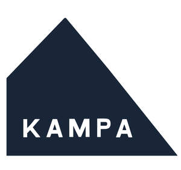
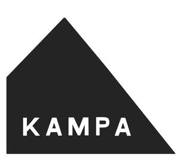

Trade Mark Journal No.2025/044 31 October 2025
UK00004272597 2 October 2025 (1,3,4,5,6,7,8,9,11,12,16,17,18,19,20,21,22,24,26,27)
Mark 1

Mark 2

- Class 1
- Textile-impregnating chemicals; leather-impregnating chemicals; textile-waterproofing chemicals; silicon crystals; calcium chloride crystals.
- Class 3
- Cleaning and fragrancing preparations; toilet cleaners; vehicle cleaning preparations; window cleaners [polish]; window cleaners in spray form; cleaning preparations.
- Class 4
- Fuels and illuminants; gas cartridges; fuel for use in barbecues; charcoal [fuel]; charcoal briquettes; firelighters; firelighters [kindling woods].
- Class 5
- Sanitary preparations and articles; disinfectants and antiseptics; disinfectants for chemical toilets.
- Class 6
- Metal hardware; tent pegs of metal; pegs of metal; metal tent stakes; hooks of metal for pulling up tent pegs; clamps (metallic) for fixing awnings; anchors of metal; anchors of metal for dogs; towing cables of metal; signs, and information and advertising displays, of metal; metal ramps; vehicle ramps of metal; metal poles; tent poles of metal; metal rails; small items of metal hardware; kick steps of metal; mobile steps [ladders] of metal; steps [ladders] of metal; wheel chocks made primarily of metal; pulleys [metal hardware].
- Class 7
- Pumps; air pumps; electric pumps; adaptors for tool bits [parts of machines]; power drill bits; electric jacks; power jacks; mechanical winders; parts and fittings for all the aforesaid goods included in this class.
- Class 8
- Hand tools, hand-operated; hand-operated implements; cutlery; knives, forks and spoons; penknives; hand pumps; air pumps, hand-operated; foot pumps; foot operated air pumps; hammers; mallets; sledgehammers; hand operated lifting jacks; parts and fittings for all the aforesaid goods included in this class.
- Class 9
- Protective and safety equipment; fire buckets; safety, security, protection and signalling devices; sockets, plugs and other contacts [electric connections]; adaptors (electric-); electric leads; connection cables; electrical couplings; plugs [electric]; measuring, detecting, monitoring and controlling devices; weight measuring instruments; spirit levels; gauges; gauges namely caravan nose weight gauges; rechargeable batteries; battery chargers; electrical converters; electrical power extension cords; chargers; power adapters; power adapters for use in vehicle lighter sockets; battery packs; voltage converters; voltage-to-current converters; plug adaptors; travel adaptors for electric plugs; electric extension cables; electrical cables; battery cables; cable harnesses; electric wiring harnesses; electric wire harnesses for automobiles; whistles for signalling; compasses; binoculars; speed indicators; pedometers; monitors, testers and apparatus for measuring and/or recording time, speed, acceleration, altitude, environmental temperature, humidity and purity; sunglasses; cases for spectacles and sunglasses; spectacles; optical apparatus and instruments.
- Class 11
- Cooking, heating, cooling and preservation equipment, for food and beverages; apparatus for lighting; apparatus for heating; apparatus for cooking; apparatus for refrigerating; apparatus for drying; apparatus for ventilating; apparatus for water supply; apparatus for sanitary purposes; friction lighters for igniting gas; gas lighters; lamps; flashlights [torches]; bicycle lights; torches for lighting; electric pocket torches; diving lights; headlights; head torches; led landscape lights; lanterns; led strip lights; led luminaires; led lamps; spotlights; ceiling lights; gas lamps; oil lamps; portable lamps [for illumination]; safety lamps; overhead lamps; lamp reflectors; pocket warmers; immersion heaters; ultraviolet ray lamps, not for medical purposes; reflectors for vehicles; water filtering apparatus; water sterilizers; storage water heaters; water heaters; electric water heaters; gas water heaters; solar water heaters; portable water heaters; portable showers; cool boxes (electric); chilling containers; refrigerating containers; gas fired heaters; gas space heaters; portable electric heaters for use in tents, caravans and motorhomes; electric blankets; dehumidifiers; air dehumidifiers; fan heaters; portable toilets; gas regulators; barbecues; gas barbecues; charcoal barbecues; stoves; camping stoves; portable gas stoves; gas ovens; portable gas ovens; gas hobs; electric ovens; portable electric hobs; electric hobs; hobs; electric griddles; gas-powered griddles [cooking appliances]; toasters; sandwich makers [toasters]; electric toasters; electric kettles; kettles; water dispensers; parts and fittings for all the aforesaid goods included in this class.
- Class 12
- Trolleys; covers for motor cars; covers for caravans; covers for motorhomes; covers for trailers; covers for trailer tents; trailer coupling covers; hitch covers; couplings (non-electric-) for towing trailers; towing hitches of metal for vehicles; stands and feet for caravans; parts and fittings for all the aforesaid goods included in this class.
- Class 16
- Paper coffee filters; paper handtowels; toilet paper; hygienic hand towels of paper; kitchen rolls [paper]; napkin paper; coasters of cardboard; coasters of paper; tablecloths of paper; garbage bags of paper or of plastics; paper bags; plastic food storage bags for household use; freezer bags; printed publications; catalogues; manuals for instructional purposes; adhesives for do-it-yourself purposes.
- Class 17
- Flexible hoses (non-metallic-); watering hoses; water hoses of textile; water hoses of rubber; seals, sealants and fillers; leaks (chemical compositions for repairing-); adhesive sealants; plastic rods and bars; flexible cellular rubber pads; padding materials of rubber; shock-absorbing and packing materials, vibration dampers; vibration dampers of rubber; cords of rubber; draught excluders; parts and fittings for all the aforesaid goods included in this class.
- Class 18
- Carrying bags; all-purpose carrying bags; bags; back packs; rucksacks; holdalls; carrying cases; luggage; wallets; pouches; luggage straps; leather straps; articles of luggage; umbrellas; parasols; parasols [sun umbrellas]; rainproof parasols; walking sticks.
- Class 19
- Non-metallic ramps; signs, and information and advertising displays, non-metallic; flooring tiles (non-metallic-); non-metal rails.
- Class 20
- Furniture; mirrors; picture frames; folding chairs; folding tables; furniture for camping; folding furniture; feet for furniture; feet (non-metallic-) for furniture; wardrobes; steps [ladders], not of metal; ladders and movable steps, non-metallic; hanging storage racks [furniture]; hangers (clothes-); chairs; stools; recliners [chairs]; tables; storage boxes [furniture]; kitchen furniture; kitchen cupboards; kitchen cabinets; air mattresses; air beds, not for medical purposes; air cushions; air pillows; inflatable furniture; inflatable chairs; inflatable sofas; repair kits for air beds and inflatable furniture; folding beds; beds; children's beds; roll mats (nap mats); pillows; cushions; mattresses; camp beds; foam camping mattresses; foam mattresses; tent poles, not of metal; poles, not of metal; pegs, not of metal (tent); clamps (non-metallic) for fixing awnings; picnic baskets [not fitted]; baskets, non-metallic; containers (non-metallic -) for storage purposes [other than household or kitchen use]; portable water carriers (containers) made of plastics; portable waste water carriers (containers) made of plastics; non-metal wheel chocks; tent pegs (not of metal); pegs not of metal; pulleys of plastic for blinds and awnings; shower curtain rails; winders, hand-operated; washstands [furniture].
- Class 21
- Household utensils; kitchen utensils; household containers; kitchen containers; cooking pots; saucepans; frying pans; non electric toasted sandwich makers; cork screws; crockery; dishes; glasses [drinking vessels]; plastic drinking vessels; lunch boxes; glassware, porcelain and earthenware not included in other classes; glasses [receptacles]; heat insulated containers; thermally insulated containers for food; jugs; picnic boxes; sandwich boxes; mugs; cups; bowls; plates; trays [household]; plastic bowls [basins]; plastic bowls [household containers]; washing up bowls; collapsible washing up bowls; fitted picnic baskets; picnic crockery; insulated bottle bags; insulating flasks; carafes; insulated carafes; cafetieres; coffee urns; culinary utensils; glass containers; bottles; flasks; containers for ice; ice bags; utensils for dispensing liquids; glass stoppers; tea infusers; tea urns (non-electric -); buckets; plastic buckets; barbecue mitts; cooking utensils for barbecue use; whistling kettles; non-electric kettles; vacuum flasks; dish drainers; dish drying racks; griddles [non electric]; cutlery trays; laundry baskets; collapsible laundry baskets; storage jars; portable cool boxes, non-electric; cool boxes; food cooling devices, containing heat exchange fluids, for household purposes; cold packs for chilling food and beverages; thermal insulated backpacks for food or beverages; thermal insulated bags for food or beverages; thermal insulated tote bags for food or beverages; wine coolers; non-electric coolers for wine; chopping boards; clothes drying racks; articles for cleaning purposes; sponges; brushes (except paint brushes); brush-making materials; brushes for cleaning; brushes connectable to water hoses; dustpans; steelwool; unworked or semi-worked glass (except glass used in building); litter bins; dusters; telescopic dusters; refuse containers; towel rails and rings; bags for microwave cooking.
- Class 22
- Tarpaulins, awnings, tents, and unfitted coverings; inner tents; marquees (textile); awnings for caravans; awnings for vehicles; awnings for motorhomes; canopies; ground sheets; fly sheet tents; washing lines; waterproof coverings for camps; waterproof covers [tarpaulins]; windbreaks; windbreaks [screening]; bungee cords; guy-lines; sails; hammocks; padding and stuffing materials (except of rubber or plastics); raw fibrous textile materials; bags and sacks for packaging, storage and transport; bags made of textile for the storage of tents; rope ladders; ropes; string; nets; tent repair kits; textile draught excluders; parts, fittings and accessories for all the aforesaid goods included in this class.
- Class 24
- Textiles; bed linen; bed covers; sheets [textile]; sleeping bag liners; bed linen and blankets; sleeping bags; towels; quick dry towels; beach towels.
- Class 26
- Tapes for repairing textile articles; patches for repairing textile articles; heat adhesive patches for repairing textile articles; eyelets.
- Class 27
- Carpets, rugs and mats; door mats; bath mats; non-slip mats for baths; non-slip mats; non-slip floor mats for use under apparatus; carpet tiles; vehicle mats and carpets; non-slip mats for showers; parts, fittings and accessories for all the aforesaid goods included in this class.
Dometic Sweden AB
Representative: Dummett Copp LLP